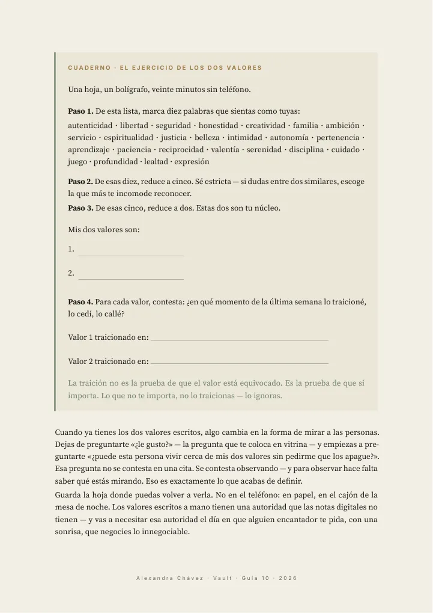
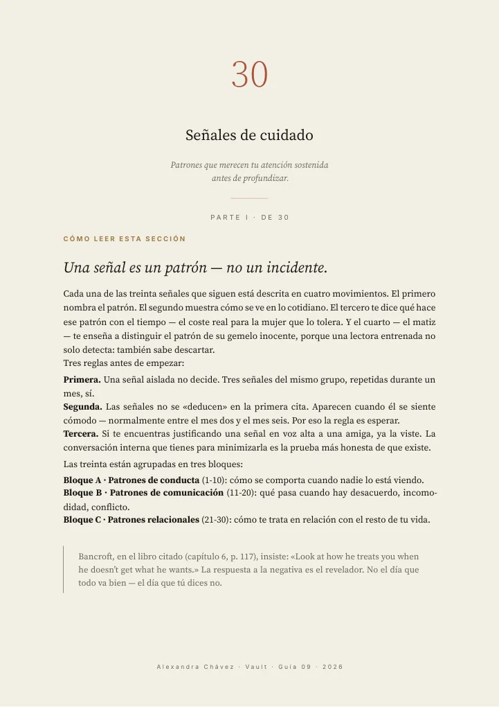
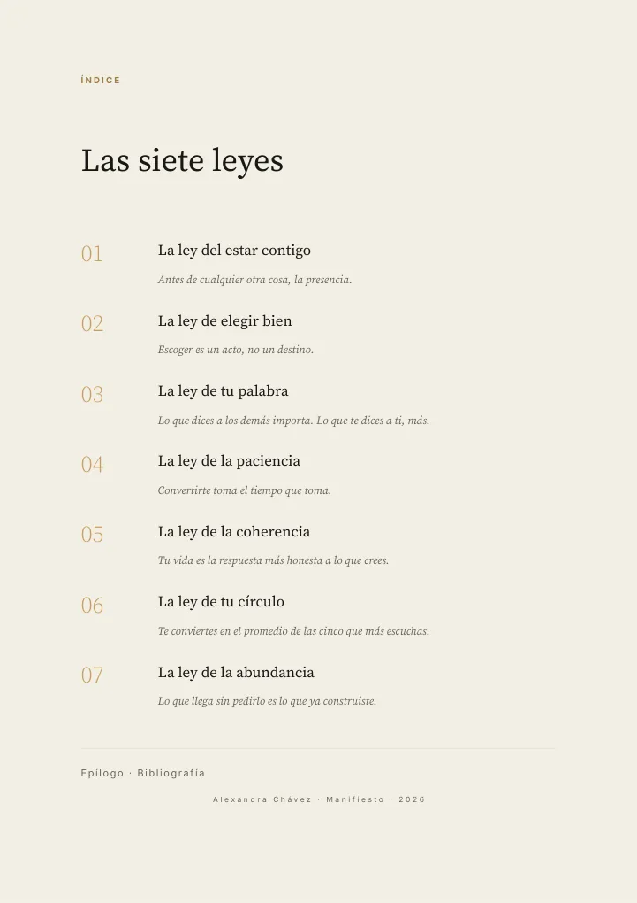
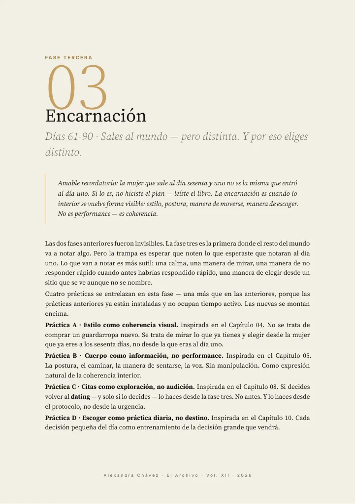
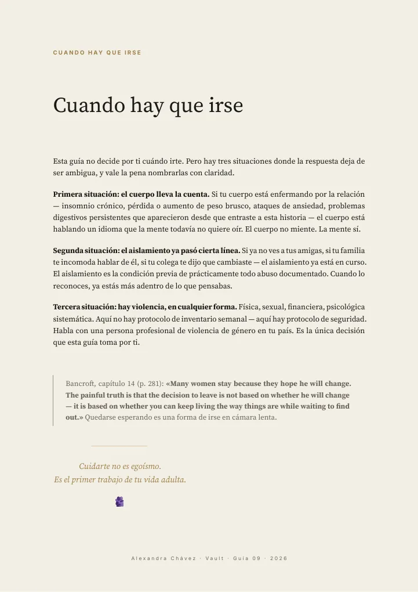

Los libros que subrayas te cambian más que los videos que guardas.
— Alexandra
El Vault · La colección completa
Doce capítulos — el Manifiesto y once guías — para responder esa pregunta con calma. Escritos para leerse en tu teléfono y quedarse contigo.
Precio fundador · primeras 100 · se anuncia al abrir
“estoy a punto de dejarlo por ver este video🥺😭”
No es un curso. Es una colección de doce capítulos — el Manifiesto y once guías — más un índice maestro para navegarlo todo: trece archivos, tuyos desde el primer minuto. Cada guía se trabaja con cuaderno: preguntas que se contestan a mano, no consejos que se olvidan al cerrar la aplicación.
Los libros que subrayas te cambian más que los videos que guardas.
— Alexandra
Escritos para leerse en el teléfono, en el bus, en la cama. Nada sobra.
Ejercicios con espacio para escribir a mano. Lo que se escribe, se sostiene.
Palabras listas para el momento en que las necesitas — una conversación difícil, un no que cuesta.
Cada guía cierra citando a las autoridades que la sostienen — Brené Brown, Esther Perel, Marian Rojas Estapé, entre otras. Porque las que escogen sabiamente también leen.
el interior
páginas reales





Páginas reales de la colección — el Manifiesto y las guías 09, 10 y 12.
capítulos — el Manifiesto y once guías
guías, cada una con su cuaderno
páginas en la colección completa
01 · Manifiesto de la Mujer Magnética
Las 7 leyes + ejercicios de cuaderno
02 · Energía Femenina: Ritual de 21 Días
Práctica diaria de 15 min que construye una base
03 · Autoestima Inquebrantable
30 ejercicios para reconstruir tu autoestima
04 · Estilo Magnético
30 atuendos + ciencia de color y silueta
05 · Lenguaje Corporal Magnético
25 posturas y gestos que comunican valor
06 · Cómo Hablar con Cualquier Hombre
50 escenarios + líneas de partida para decirlo a tu manera
07 · El Arte de Decir No
Límites sin culpa — 7 frases que sostienen tu palabra
08 · Citas Memorables
De primera cita a exclusivo
09 · Banderas Rojas y Verdes
30 señales de cuidado, 30 de coherencia
10 · Cómo Escoger Bien
El protocolo de 6 fases para escoger pareja
11 · Rutinas de una Mujer Magnética
Mañana, día, noche — adaptable a cualquier presupuesto
12 · El Plan de 90 Días
Tu proceso completo, semana a semana
+ el Índice Maestro: el mapa de lectura de toda la colección.
«¿le gusto?»
«¿puede esta persona vivir cerca de mis dos valores sin pedirme que los apague?»
Cuando ya tienes los dos valores escritos, algo cambia en la forma de mirar a las personas. Dejas de preguntarte «¿le gusto?» — la pregunta que te coloca en vitrina — y empiezas a preguntarte «¿puede esta persona vivir cerca de mis dos valores sin pedirme que los apague?». Esa pregunta no se contesta en una cita. Se contesta observando — y para observar hace falta saber qué estás mirando. Eso es exactamente lo que acabas de definir.
“yo te hice caso, deje de ir una relación de 5 años horrible me quedé soltera 3 y justo hoy estoy escribiendo esto desde el lugar donde será mi boda por favor váyanse de donde no deben de estar”
“Renuncié a mi ex que no se quería casar conmigo… y que creen? El próximo mes me voy a casar!!!!”
Comentarios reales dejados bajo sus videos, citados tal cual fueron escritos.
Precio fundador · primeras 100
Edición fundadora
Precio fundador
o en 3 cuotas
La colección completa: 12 capítulos (el Manifiesto + 11 guías) + Índice Maestro.
Acceso inmediato y de por vida. Pagas una vez.
Para las primeras 100.
Edición estándar
Precio regular
en cuotas si lo prefieres
La misma colección, cuando cierre el precio fundador.
Edición de lanzamiento
El Vault y tres meses del Club, juntos.
Tarjeta en cuotas, Pix, OXXO, Mercado Pago — pago seguro vía Hotmart, en tu moneda local. Precios en dólares (USD). El total final, con impuestos, se muestra en tu moneda antes de pagar.
Garantía de 7 días. Si no es para ti, escribes y se te devuelve el dinero. Sin preguntas. Si compras desde Europa, tu garantía es de 15 días — y esta garantía nunca reduce los derechos que te da la ley de tu país.
“Yo si te hice caso hermosa, me caso mañana 🙊🙊❤️🩹” — seguidora, 733 ❤
Trece archivos PDF: doce capítulos — el Manifiesto y once guías — más el Índice Maestro. Llegan a tu correo al momento de pagar, se leen en cualquier teléfono, y son tuyos de por vida. El acceso es inmediato: al confirmar tu compra aceptas recibir el contenido digital al instante.
Sí — tarjeta en 3 cuotas. También Pix, OXXO y Mercado Pago. El pago lo procesa Hotmart y verás el precio en tu moneda local.
Hotmart — la plataforma de pagos digitales que usan miles de creadoras en toda Latinoamérica y España. Nosotras nunca vemos ni guardamos tus datos de pago.
Tienes 7 días (15 si compras desde Europa). Si no es para ti, escribes y se te devuelve el dinero. Así de simple — la colección se sostiene sola. Esta garantía se suma a los derechos que te dé la ley de tu país.
Para siempre. Pagas una vez y la colección es tuya — para releerla en otra etapa de tu vida y encontrar otra cosa.
Cuando una mujer está aprendiendo a escoger — a alguien, o a sí misma — este trabajo es para ella. La etapa cambia el capítulo por el que empiezas, no la colección.
No. La compra la procesa Hotmart, la colección llega a tu correo, y tu biblioteca es tuya. Lo que lees es asunto tuyo.
Te llegará un correo para confirmar tu suscripción. Un clic para salir, cuando quieras. Más en la Política de Privacidad.